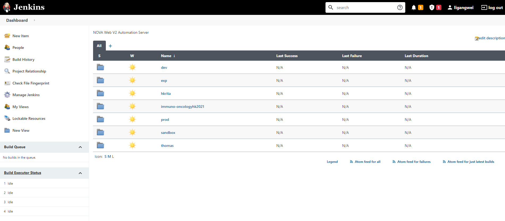
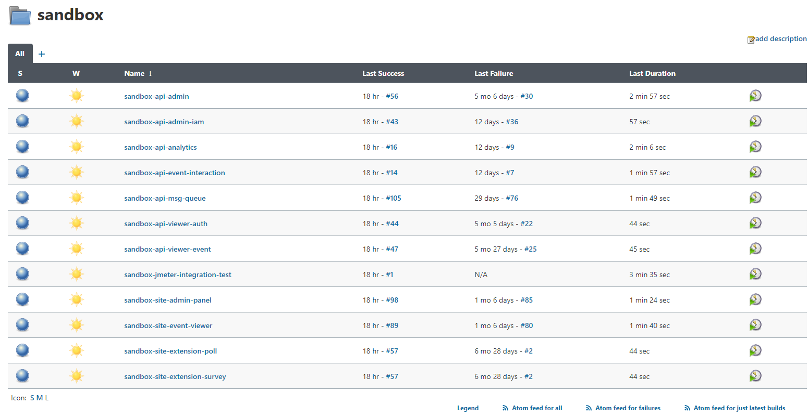
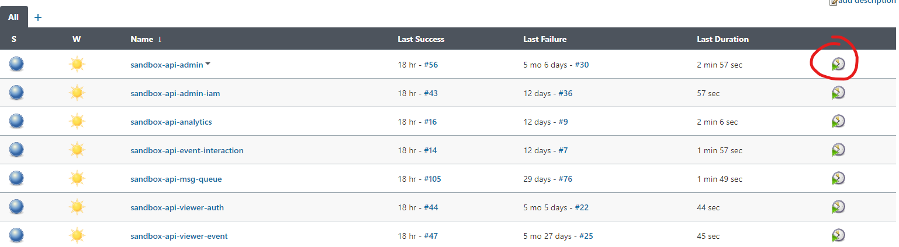

Deployment QOL
Automation
Since we have 7 api projects and 4 site project(so far).
Merging and deploying 11 projects everytime a deployment is made, not to mention having to properly remember and manage different env secrets, giving the proper cli stage variables, is not only tiresome, it's also prone to human errors.
Therefore, for deployment, we have a Jenkins CICD server at our disposal.
The details of our Jenkins server will be in another chapter.
Our Jenkins home page should look like this(after login):

Depending on your level of access, what you see may differ from this.
Navigate into a stage's folder, we'll take sandbox for instance:

And then press the play button on the project you wish to deploy:

It will copy the necessary env files over, together with api secrets for third party apis, install required modules and deploy for you.
The script it runs looks a bit like this:
npm install
cp ~/nova-env/.env.<STAGE>.json $WORKSPACE/
cp ~/nova-env/.secrets.<STAGE>.json $WORKSPACE/
sls deploy --stage <STAGE> --profile default
Jobs can run concurrently, meaning you can safely press play on all 11 projects, and patiently let it do its job.
Deployments are also done from their respective branch, therefore sandbox and prod deployments
should to an extent be idempotent.
Recommended shell Scripts to Have
Even with the help of Jenkins, managing 11 git repositories is still somewhat a cognitively demanding operation. Therefore, it is recommended to have a number of local bash scripts that can help with your everyday tasks.
- Copies env files from server
- Our envs are stored on the jenkins instance, if you have ssh access, you can conveniently copy
them to your local environment with
scp - example(all examples are in batch(windows)):
- Our envs are stored on the jenkins instance, if you have ssh access, you can conveniently copy
them to your local environment with
echo off
scp <server_domain>:~/nova-env/.env.*.json ./
scp <server_domain>:~/nova-env/.secrets.*.json ./
for /D %%i in ("*") do (
xcopy .env.*.json %~dp0\%%i\ /Y
xcopy .secrets.*.json %~dp0\%%i\ /Y
)
pause
- Merge current
mastertosandbox- This will be done about once a week, so it's immensely helpful if you don't need to merge and push all 11 projects manually
- Example: (in batch)
echo off
for /D %%i in ("*") do (
cd %~dp0%%i
call git switch master --recurse-submodules --discard-changes
call git pull --ff-only
call git submodule update --init --recursive
call git switch sandbox --recurse-submodules --discard-changes
call git merge master --ff-only
call git push
call git switch master --recurse-submodules --discard-changes
)
pause
-
Merge current
sandboxtoprod- This one goes without saying
-
Update all submodules to the latest
- This is not done very frequently, usually submodule\ versions are managed per projects, since every project is usually on a different submodule version, but on the rare occasions that you made substantial updates to the submodule and is updating submodules for all api projects frequently(a couple times a day), this is immensely helpful.